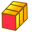
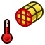
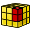
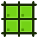
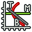

Le module Fem Workbench offre une méthode moderne d'analyse d'éléments fini (Finite Element Analysis (FEA)) pour FreeCAD. Principalement, cela signifie que tous les outils servants à faire une analyse d'éléments finis sont réunis en une seule interface graphique.

Les étapes pour faire un FEA dans FreeCAD l'atelier graphique FEM possède:
- Prétraitement
- La modélisation de la géométrie, dans laquelle FreeCAD est un logiciel presque à maturité.
- Création et Analyse:
- Création d'un Mesh FEM sur le modèle géométrique.
- Ajouter des contraintes telles que les charges et les correctifs de soutien au modèle a analyser.
- Ajout de matériel pour analyser le modèle
- Résolution
- Résolution du système d'équations à partir de l'interface de FreeCAD.
- Post-traitement
- Vue des résultats dans l'interface de FreeCAD.
Ce qui précède décrit principalement comment se déroule une analyse par éléments finis à l'intérieur FreeCAD FEM Workbench. Pour la documentation consulter les détail des outils de l'interface graphique décrites ci dessous.
À partir des versions FreeCAD 0,15 le module FEM peut être utilisé sur les plates-formes Windows, Mac OSX et Linux. L'atelier FEM utilise un logiciel externe, en attendant la finalisation de l'atelier FEM la quantité d'interventions manuelles nécessaire dépendra de l'OS utilisé . Consultez FEM Installation.
Outils
- Menu Modèle:
-
 Conteneur d'analyse: Crée un nouveau conteneur pour une analyse mécanique. Si un solide est sélectionné dans l'arborescence avant de cliquer dessus, la boîte de dialogue de maillage s'ouvrira.
Conteneur d'analyse: Crée un nouveau conteneur pour une analyse mécanique. Si un solide est sélectionné dans l'arborescence avant de cliquer dessus, la boîte de dialogue de maillage s'ouvrira. -
 FEM matériel pour solide: Vous permet de sélectionner un matériau de la base de données.
FEM matériel pour solide: Vous permet de sélectionner un matériau de la base de données. - FEM matériau pour fluide: Permet de sélectionner un matériau dans la base de données.
-
 Matériau mécanique non linéaire: Permet de sélectionner un matériau dans la base de données.
Matériau mécanique non linéaire: Permet de sélectionner un matériau dans la base de données. -  Beam coupe transversale:
-
 Beam rotation:
Beam rotation: -
 Shell épaisseur de la plaque:
Shell épaisseur de la plaque: -
 Section fluide pour flux 1D:
Section fluide pour flux 1D: - Mechanical constraints:
- Contrainte fixe: Utilisé pour définir une contrainte fixe sur le point/bord/face(s).
-
 Contrainte de déplacement: Utilisé pour définir une contrainte de déplacement sur le point/bord/face(s).
Contrainte de déplacement: Utilisé pour définir une contrainte de déplacement sur le point/bord/face(s). -
 Contrainte de rotation du plan: Permet de définir une contrainte de rotation plane sur une face plane.
Contrainte de rotation du plan: Permet de définir une contrainte de rotation plane sur une face plane. -
 Contrainte de contact: Utilisé pour définir une contrainte de contact entre deux faces.
Contrainte de contact: Utilisé pour définir une contrainte de contact entre deux faces. -
 Contrainte de transformation:
Contrainte de transformation: -
 Contrainte de force: Utilisé pour définir une force dans [N] appliquée uniformément à une face sélectionnable dans une direction définissable.
Contrainte de force: Utilisé pour définir une force dans [N] appliquée uniformément à une face sélectionnable dans une direction définissable. -
 Contrainte de pression: Permet de définir une contrainte de pression.
Contrainte de pression: Permet de définir une contrainte de pression. -
 Contrainte de poids: Permet de définir une accélération de gravité agissant sur un modèle.
Contrainte de poids: Permet de définir une accélération de gravité agissant sur un modèle. -
 Contrainte de roulement: Utilisé pour définir une contrainte de roulement.
Contrainte de roulement: Utilisé pour définir une contrainte de roulement. -
 contrainte d'engrenage: Utilisé pour définir une contrainte de vitesse.
contrainte d'engrenage: Utilisé pour définir une contrainte de vitesse. -
 Contrainte de poulie: Utilisée pour définir une contrainte de poulie.
Contrainte de poulie: Utilisée pour définir une contrainte de poulie.
- Contraintes thermiques
-
 Contrainte initiale de température: Permet de définir la température initiale d'un corps.
Contrainte initiale de température: Permet de définir la température initiale d'un corps. -
 Contrainte flux thermique: Permet de définir une contrainte de flux thermique sur une ou plusieurs face(s).
Contrainte flux thermique: Permet de définir une contrainte de flux thermique sur une ou plusieurs face(s). -  Contrainte de température: Permet de définir une contrainte de température sur un point/bord/face(s).
- Contrainte de Source de chaleur d'un corps:
-
- Contraintes de fluides:
-
{kind=link}
{kind=link}
{kind=link}
{kind=link}
- Menu Mesh:
-
 Maillage FEM à partir de la forme avec Netgen:
Maillage FEM à partir de la forme avec Netgen: -
 Maillage FEM à partir de la forme avec GMSH:
Maillage FEM à partir de la forme avec GMSH: -
 Couche limite de maillage FEM:
Couche limite de maillage FEM: -  FEM maillage région:
-
 Groupe de mailles FEM:
Groupe de mailles FEM: -
 Ensemble de nœuds: Crée/définit un ensemble de nœuds à partir d'un maillage FEM.
Ensemble de nœuds: Crée/définit un ensemble de nœuds à partir d'un maillage FEM. -
 FEM mesh à mesh: Convertit la surface d'un mesh FEM en mesh.
FEM mesh à mesh: Convertit la surface d'un mesh FEM en mesh.
-
{kind=link}
- Menu du Solveur:
-
 Solveur Calculix Outils CCX: Crée un nouveau solveur pour cette analyse. Dans la plupart des cas, le solveur est créé avec l'analyse.
Solveur Calculix Outils CCX: Crée un nouveau solveur pour cette analyse. Dans la plupart des cas, le solveur est créé avec l'analyse. - Solveur CalculiX:
-
 Solveur Elmer:
Solveur Elmer: - Solveur Z88:
- Équation de chaleur:
- Équation d'élasticité:
-
 Équation électrostatique:
Équation électrostatique: -
 Équation flux du solveur:
Équation flux du solveur: -
 Équation de flux:
Équation de flux: -
 Contrôle du travail du solveur: Ouvre le menu pour ajuster et démarrer le solveur sélectionné.
Contrôle du travail du solveur: Ouvre le menu pour ajuster et démarrer le solveur sélectionné. -
 Calcul de l'exécution du solveur: Exécute le solveur sélectionné de l'analyse active.
Calcul de l'exécution du solveur: Exécute le solveur sélectionné de l'analyse active.
-
{kind=link}
{kind=link}
- Menu Resultats:
- Purge le résultat: Supprime les résultats de l'analyse active.
- 24px Affiche le résultat: Utilisé pour afficher le résultat d'une analyse.
- icon
 Post Appliquer les modifications:
Post Appliquer les modifications: -  Post Pipeline à partir du résultat:
-
 Post Créer un filtre de clip:
Post Créer un filtre de clip: -
 Post Créer un filtre de clip scalaire:
Post Créer un filtre de clip scalaire: -
 Post Créer un filtre de coupe:
Post Créer un filtre de coupe: -
 Post Créer un filtre vectoriel Warp:
Post Créer un filtre vectoriel Warp: -
 Post Créer des données le long d'un filtre en ligne:
Post Créer des données le long d'un filtre en ligne: -  Post Créer des contraintes linéarisées:
- icon [[Image:|32px]] Post Créer des données au filtre de points:
-
 Post Créer des fonctions:
Post Créer des fonctions:
{kind=link}
{kind=link}
{kind=link}
{kind=link}
- Menu Contextuel:
{kind=link}
- Préférences
-
 Préférences...: Préférences disponibles dans les outils FEM.
Préférences...: Préférences disponibles dans les outils FEM.
-
Tutoriel
Tutoriel 1 FEM CalculiX Cantilever 3D
Tutoriel 2 FEM Tutoriel
Tutoriel 3 FEM Tutoriel Python
Tutoriel 4 FEM Cisaillement d'un bloc composite
Tutoriel analyse de couple thermique PDF's
Tutoriel vidéo 1 Forum post with you tube link
Tutoriel vidéo 2 Forum post with you tube link
Recherche de tutoriels vidéo Forum post with you tube link
Liens
FEM Install pour plus de détails sur comment configurer et utiliser le module FEM.
FEM Mesh Pour plus d'informations à propos de FEM Mesh dans FreeCAD
FEM CalculiX pour plus d'information entre les sur l'interface du module FEM et le solveur courant CalculiX
FEM Project pour plus de détails et d'informations sur Units, limitations et développement sur le module FEM.